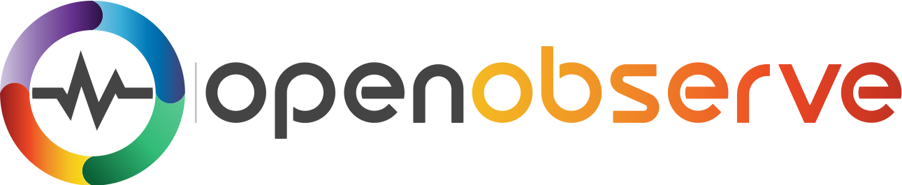

Bug fixes and debugging
Agents read the issue, code, tests, CI, and logs. When they find the root cause, they propose or deliver a PR with evidence.
 Faktorial.AI
Asynkron autonomous engineering
Faktorial.AI
Asynkron autonomous engineering
Faktorial takes issues from “should get done” to tested PR, merge, and lessons learned back into the system. You choose labels, branch, quality gates, and how autonomous it is allowed to be.
The simple pitch is not “AI writes code”. It is that the team’s existing work can flow through a controlled factory: debugging, development, verification, and learning.
Agents read the issue, code, tests, CI, and logs. When they find the root cause, they propose or deliver a PR with evidence.
UI, backend, integrations, migrations, and test coverage move from acceptance criteria to branch, commit, and PR.
Retries, friction, and good decisions become ADRs, new agent rules, or tasks that improve the next delivery.
Run on selected labels, selected sizes, the full backlog, or only a pilot. PR-only or auto-merge is a control.
GitHub remains the source of truth. Faktorial reads the work, applies rules and compliance, then dispatches the right agent runtime with the right process and evidence requirements.
Faktorial isolates each issue in its own branch and worktree. Investigation sets the boundaries, build does the work, verify keeps scope and test evidence honest, deploy handles merge, and learn writes back what the system should remember.
You choose what may happen, where it may happen, and when a human must approve the work.
Faktorial captures signals from development and turns them into usable assets: rules for agents, ADRs for humans, and new issues for improvements that do not belong in the same PR.
GitHub, CI, local logs, and the Faktorial dashboard are the core. Datadog and Grafana connect as integrations for teams already living in logs and metrics.

Issues, labels, branches, PRs, comments, and CI state.

Local state, workers, worktrees, issue logs, and evidence.

Logs, metrics, and traces from runtime-owned boundaries.

Natural ingest surface for production signals.
Dashboard layer for teams already living in metrics.
Faktorial works best when your team already has a GitHub workflow, a queue of engineering work, and enough context in issues or code for implementation to be reviewed against clear expectations.
The first proof should come from your repo, not a staged demo. A pilot uses a bounded set of issues and reports the evidence engineering leaders actually care about: accepted PRs, CI results, review rework, cycle time, and escalation quality.
How many PRs were accepted, merged, or returned for rework.
How long issues took from pickup to review-ready pull request.
Which tests, CI checks, and trace links backed each delivery.
Where the system paused for human judgment instead of guessing.
Use Faktorial inside your existing GitHub workflow with your engineers reviewing PRs, or use Faktorial Managed when you want Asynkron to run the delivery loop. Same pipeline, same quality gates, same traceability.
Best when you already have a development team and want more delivery capacity inside the workflow you use today. Your team owns priorities, architecture, reviews, and merge decisions. Faktorial handles scoped implementation work.
Best when you want Asynkron to run the operating loop. You file or approve issues; senior engineers supervise Faktorial, handle escalations, and deliver review-ready code.
The point is simple: Faktorial is not a chatbot and not a code generator. It is a controlled delivery factory that can work continuously on the backlog you already have.

Asynkron brings distributed-systems experience from high-scale, mission-critical platforms across finance, industrial automation, and real-time communications into Faktorial's delivery model.

Proto.Actor is Asynkron's actor framework for .NET and Go, built for resilient distributed systems with message-driven actors, virtual actors, and clustering.